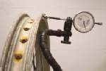

The rim is the metal hoop that carries the tyre. On a spoked wheel it is a separate ring held to the hub by the spokes. On a cast alloy wheel the rim, spokes and hub are one piece.
What it does
The rim holds the tyre bead in its seat, so air stays in and the tyre stays on. It must be round and straight, or the wheel hops or wobbles. On a wire wheel the rim is set true by adjusting the spokes. A tyre only fits well if its width is within the range the rim allows.
Signs it is worn or failing
- Dents, flat spots or cracks after hitting a pothole: Rim is dented or cracked.
- Wheel wobbles or hops when spun: Wheel is buckled.
- Vibration at some speeds: Vibration at certain speeds.
- Air leaks at the bead: Air leaking where the tyre meets the rim.
- Rust or pitting in the bead seat on an old rim.
When to replace it
A cracked rim is replaced, never welded or straightened for road use. A small dent that does not leak and keeps the wheel true may be watched. A rim that cannot be pulled true with the spokes is bent too far. Two broken spokes close together are a reason to stop and look at the whole wheel.
What to match when buying
- Rim diameter and width, as in the bike's manual.
- On a wire wheel: the number of spoke holes must equal the number of holes in the hub.
- Tubeless or tube-type. Some wire rims are made for tubeless tyres.
- A rim strip or tape that covers the nipple ends if the wheel uses an inner tube.
Fitting notes
- Check runout with a gauge or a fixed pointer: Check a wheel for runout.
- Truing is done in many small spoke turns: True a spoked wheel.
- Fit the tyre with care so the bead seats evenly: Replace a tyre.
- Balance the wheel after a tyre change if the bike vibrates.